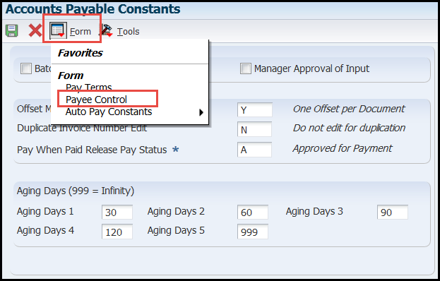
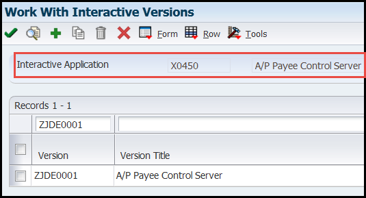
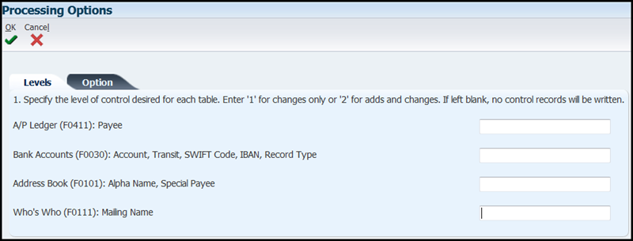

| Purpose |
| Troubleshooting Steps |
| Payee Control Set Up (X0450, P0450) |
| Payee Control Configuration |
| Review and Approval |
| Purge Payee Control Records |
| Limitations |
| Troubleshooting Error(s) |
| Error ID: 4742 - "Payee Control - Payee Pending Approval" |
| Payment Setup KM References |
This document helps with setting up and troubleshooting errors with Payee Control within EnterpriseOne Accounts Payable.
Payee Control is an audit feature in the Accounts Payable module used to prevent fraud. When changes are made to critical payment information, the system writes a record to the Payee Control table (F0450). This record includes:
Until a Payee Control record is approved, the system prevents automatic payments to the associated payee by printing an error message on the Create Payment Group report (R04570) and not including the vouchers in the payment group.
The AP Payee Control Server (X0450) manages this audit feature. This program can be accessed by using the Payee Control option on the Form Exit within the Accounts Payable Constants (P0000). Payee Control is configured by populating the processing options of the ZJDE0001 version of the AP Payee Control Server (X0450). If any copies or new versions are created of this program, the system does not use them for the Payee Control process. Levels of control can be set for changes only, additions and changes or no control records. The following fields are applicable for the control edit and are listed in the AP Payee Control Server (X0450) processing options:
Go to Accounts Payable Constants (fast path 4K)

Go to Form Exit and Select Payee Control

Then review your set up on version ZJDE0001

Before records can be written to the Payee Control table (F0450), a Next Number must be defined in the Next Unique Number (P00022) for Object Name (data dictionary item OBJN) of F0450 .
Payee Control Records can be reviewed or approved through the Payee Control Review and Approval application (P0450):
Payee Control Records can also be reviewed using the Payee Control Approval Report (R04505).
Approved Payee Control records can be purged by running the AP Control File Purge UBE (R0450P) program. This program deletes the audit trail for approved Payee Control records (F0450). This UBE does not have any processing options.
Payee Control does not eliminate all risk. It is intended for use in conjunction with management controls to prevent error and fraud. Payee Control has the following limitations that additional security or processes should be implemented for:
Scenario: The Create Payment Control Groups (R04570) PDF contains the following error: "4742: Payee Control - Payee Pending Approval".
Solution: This error is caused by existing records in the Payee Control table (F0450) that need to be approved prior to making payments for that Supplier. To approve these changes, complete the following steps:
Troubleshooting Payee Control
Troubleshooting Payment Instrument and Print Program Set Up and Errors (P0417)
Troubleshooting GL Bank Account Set Up (P0030G)
Troubleshooting Print Sequence Set Up (P0415)
FAQ - Frequently Asked Questions Regarding Payee Control Within EnterpriseOne Accounts Payable (X0450/P0450)